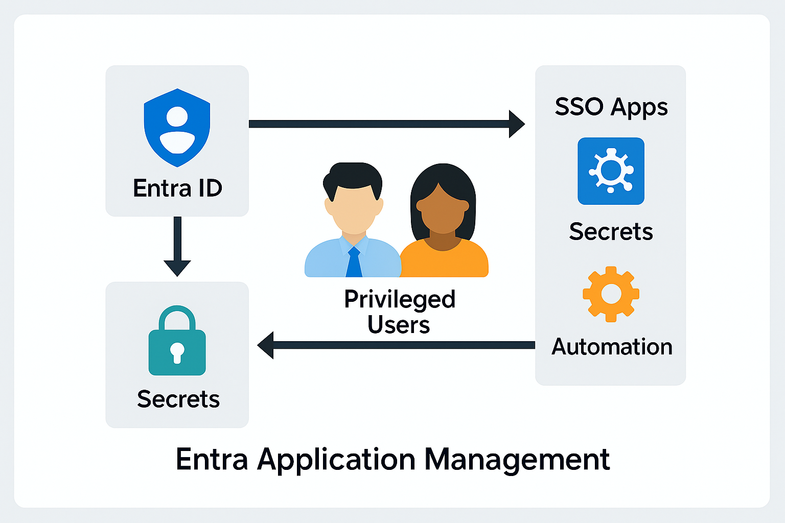

Challenge
With dozens of apps connected to Entra ID, the organization needed structured governance over app lifecycle, permissions, and automation. The goal was to eliminate stale apps, enforce least privilege, and enable secure automation without interactive prompts.
Tools & Technologies
- Microsoft Entra Admin Center
- Microsoft Graph API Permissions
- Application Registration & Enterprise Apps
- Certificate & Secret Management
- 1Password Vault (for secret storage)
- SSO Protocols: SAML, OIDC, OAuth
Implementation
- Audited and removed stale or unused applications from Entra
- Created new app registrations for SSO and automation scenarios
- Assigned Graph API permissions (delegated and application-level)
- Managed user assignment and role-based access to apps
- Generated and rotated certificates and client secrets for secure access
- Stored secrets in 1Password Vault for secure retrieval
- Enabled certificate-based auth for automation without MFA prompts
Architecture Diagram
This placeholder diagram will be replaced with the final version:
Impact
- Reduced app sprawl and improved tenant hygiene
- Secured automation pipelines with certificate-based auth
- Enforced least privilege via scoped Graph API permissions
- Centralized secret management using 1Password Vault